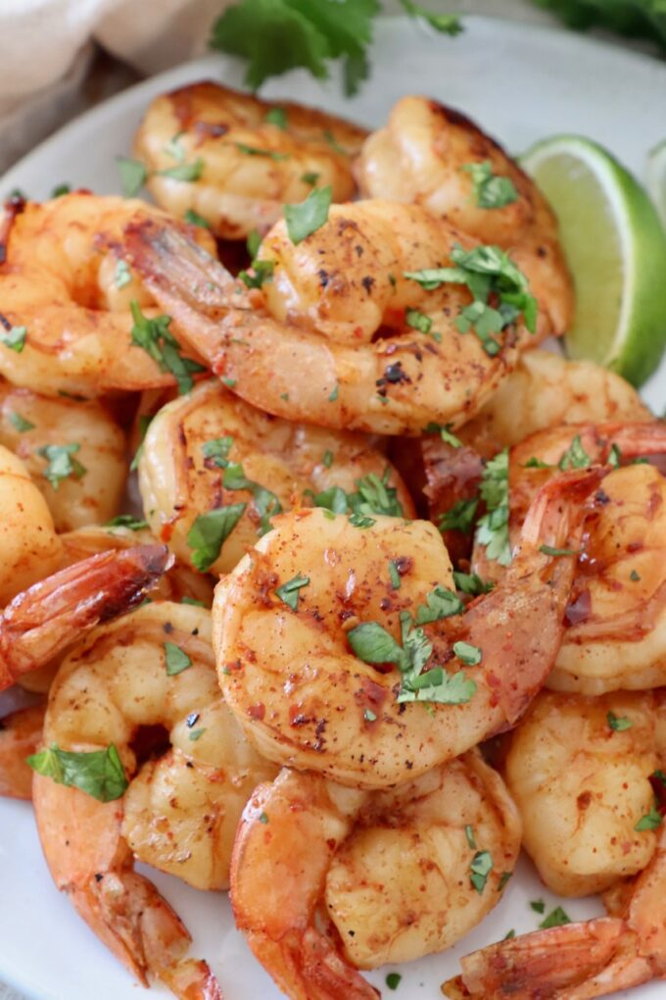

Spicy Lime Grilled Shrimp

Description
This succulent, yet healthy dish, compromised of simple, yet hearty
ingredients, provides delicious, yet nutritious sustenance.
Ingredients
Steps
- Mix together Cajun seasoning, lime juice, and oil in a resealable plastic bag.
Add shrimp, coat with marinade, squeeze out excess air, and seal the bag.
Marinate in the refrigerator for 20 minutes.
- Preheat an outdoor grill for medium heat and lightly oil the grate.
- Remove shrimp from marinade; shake off excess. Discard remaining marinade.
- Cook shrimp on the preheated grill until bright pink on the outside and
the meat is no longer transparent in the center, about 2 minutes per side.
Home Page